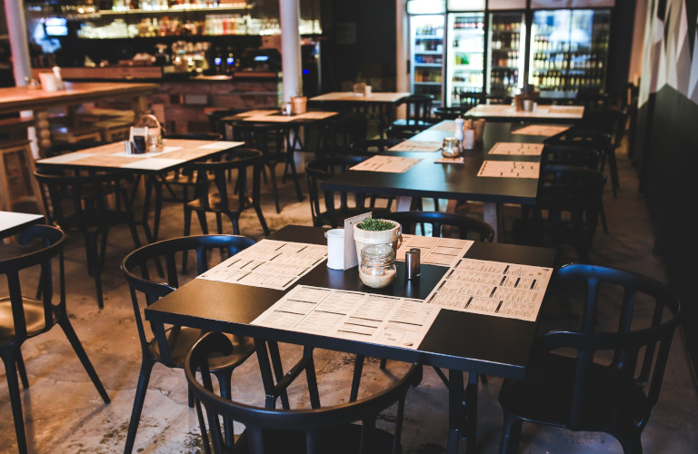
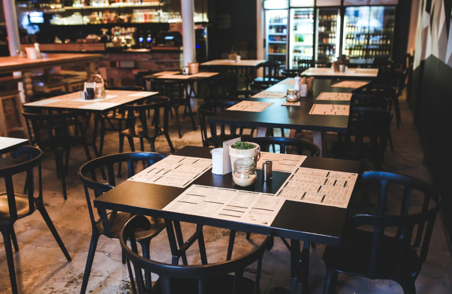

Welcome to Haukai Restaurant
At Haukai, we not only serve delicious food but also invite you to experience Te Ao Māori, where every meal is blessed with traditional karakia, reflecting the deep connection between food, culture, and community. Our chefs take pride in preparing authentic Māori and Pākehā dishes, combining fresh, locally sourced ingredients with a contemporary twist.
Whether you're a local looking for a familiar taste or a visitor eager to explore the rich cultural heritage of New Zealand, Haukai offers an unforgettable dining experience. Each dish carries with it the essence of our land, sea, and traditions. We welcome you to share in this unique experience, where hospitality meets history, and every meal tells a story.
Join us for an evening of fine dining, and immerse yourself in the flavors and stories of Aotearoa, where food is more than sustenance—it’s a connection to the spirit of our people and our land. Nau mai, haere mai, welcome to Haukai!